SECCIÓN 8A
CINTURONES DE SEGURIDAD
Precaución: Desconecte el cable negativo de la batería antes de desmontar o instalar cualquier unidad eléctrica o cuando exista la posibilidad de que una herramienta o equipo pueda entrar en contacto con bornes eléctricos expuestos. La desconexión de dicho cable ayudará a evitar lesiones personales y daños al vehículo. La llave de contacto debe estar en posición LOCK a menos que se indique lo contrario.
ESPECIFICACIONES
Especificaciones de apriete
| Aplicación | N•m | Árbol de transmisión izquierdo | Articulación |
| Tornillo del anclaje de la sujeción del asiento para niños | 25 | 18 | - |
| Tornillos del regulador de altura del cinturón de seguridad delantero | 23 | 17 | - |
| Tornillo de anclaje del cinturón de seguridad | 38 | 28 | - |
| Tornillos del soporte del retractor del cinturón de seguridad | 3 | - | 27 |
| Tornillo del retractor del cinturón de seguridad | 38 | 28 | - |
DIAGRAMAS DE ESQUEMAS Y DIRECCIONES
Aviso del cinturón de seguridad del conductor
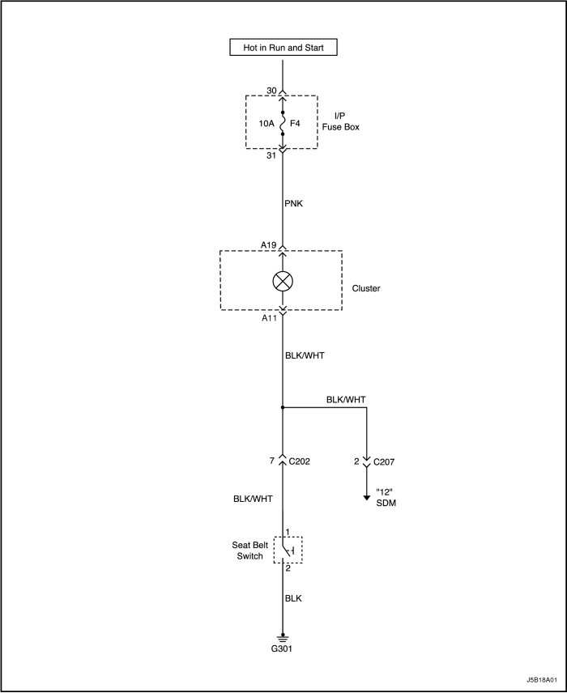


DIAGNÓSTICO
Aviso del cinturón de seguridad del conductor
La luz de aviso del cinturón de seguridad no se enciende en ningún momento
| Paso | Medida | Valor(es) | Sí | No |
| 1 | Compruebe el fusible F4 de la luz de aviso del cinturón de seguridad. ¿Está fundido el fusible F4? | - | Vaya al Paso 2 | Vaya al Paso 3 |
| 2 | - Compruebe si hay un cortocircuito y repárelo si es necesario.
- Sustituya el fusible.
¿Se ha realizado la reparación? | - | Sistema OK | - |
| 3 | - Gire la llave de contacto a la posición ON.
- Compruebe la tensión en el fusible F4.
¿El valor de la tensión es el mismo que el especificado? | 11-14 V | Vaya al Paso 5 | Vaya al Paso 4 |
| 4 | Repare el circuito de alimentación de corriente abierto del fusible F4. ¿Se ha realizado la reparación? | - | Sistema OK | - |
| 5 | - Desenchufe el conector del interruptor del cinturón de seguridad (situado debajo del asiento del conductor).
- Conecte un puente entre los terminales en el lado del cableado del conector del interruptor del asiento de seguridad.
- Gire la llave de contacto a la posición ON.
¿Se enciende la luz de aviso del cinturón de seguridad? | - | Vaya al Paso 6 | Vaya al Paso 7 |
| 6 | Sustituya el interruptor del cinturón de seguridad. ¿Se ha realizado la reparación? | - | Sistema OK | - |
| 7 | - Desmonte el cuadro de instrumentos.
- Compruebe la lámpara de la luz de aviso del cinturón de seguridad.
¿Está bien la bombilla? | - | Vaya al Paso 9 | Vaya al Paso 8 |
| 8 | Sustituya la bombilla de la luz de aviso. ¿Se ha realizado la reparación? | - | Sistema OK | - |
| 9 | Repare el circuito abierto entre el terminal A11 del cuadro de instrumentos y masa. ¿Se ha realizado la reparación? | - | Sistema OK | - |
MANTENIMIENTO Y REPARACIÓN
servicio con vehículo en marcha
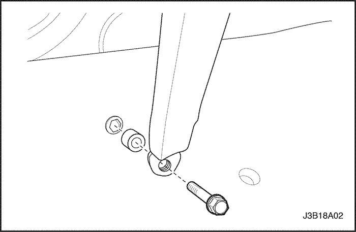
Cinturón de seguridad delantero
Procedimiento de desmontaje
- Desmonte la tapa de plástico para dejar al descubierto el anclaje del cinturón de seguridad en el montante B inferior.
- Quite el tornillo y desmonte el anclaje del cinturón de seguridad en el montante B inferior.
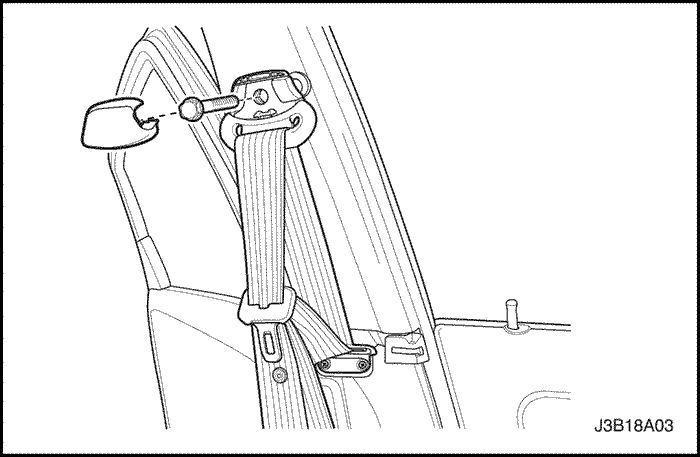
- Desmonte el panel de guarnecido del montante B inferior. Consulte la Sección 9G, Guarnecido interior.
- Desmonte la tapa de plástico para dejar al descubierto el anclaje superior del cinturón de seguridad del montante B.
- Quite el tornillo y desmonte el anclaje del cinturón de seguridad en el montante B superior.
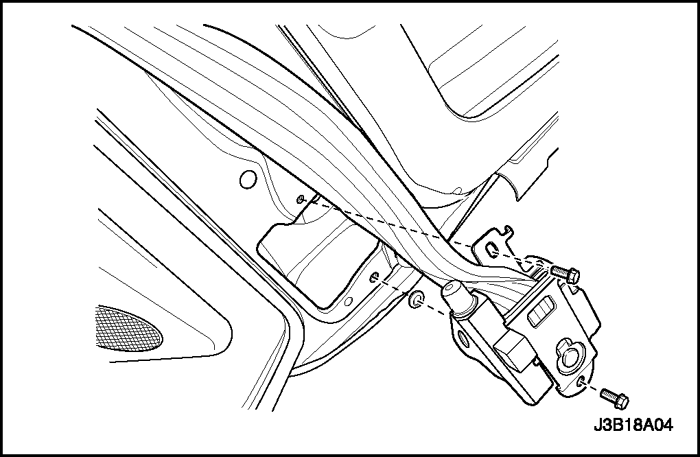
- Desenchufe el conector del pretensor, si el vehículo dispone del mismo.
- Quite los tornillos del soporte del retractor del cinturón de seguridad.
- Quite el tornillo y desmonte el retractor del cinturón de seguridad.
procedimiento de montaje
Precaución: Si no se coloca el tornillo correcto para el retractor, el pretensor del cinturón de seguridad puede fallar en caso de accidente y provocar, quizás, lesiones personales.
Aviso: Metales distintos en contacto directo pueden corroerse rápidamente. Asegúrese de utilizar los elementos de sujeción correctos para evitar una corrosión prematura.
- Monte el retractor del cinturón de seguridad con su tornillo.
Apretar
Apriete el tornillo del retractor del cinturón de seguridad hasta 38 N•m (28 lb-pie).
- Monte el soporte del retractor del cinturón de seguridad con su tornillo.
Apretar
Apriete el tornillo del soporte del cinturón de seguridad hasta 3 N•m (27 lb-pulg.).
- Enchufe el conector del pretensor, si el vehículo dispone del mismo.
- Monte el anclaje del cinturón de seguridad en el montante B superior con su tornillo.
Apretar
Apriete el tornillo del anclaje del cinturón de seguridad hasta 38 N•m (28 lb-pie).
- Monte la tapa de plástico del anclaje del cinturón de seguridad.
- Monte el panel de guarnecido del montante B inferior. Consulte la Sección 9G, Guarnecido interior.
- Monte el anclaje del cinturón de seguridad en el montante B inferior con su tornillo.
Apretar
Apriete el tornillo del anclaje del cinturón de seguridad hasta 38 N•m (28 lb-pie).
- Monte la tapa de plástico del anclaje del cinturón de seguridad.
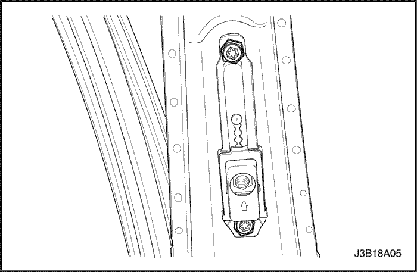
Regulador de altura del cinturón de seguridad delantero
Procedimiento de desmontaje
- Desmonte el panel de guarnecido del montante- B superior. Consulte la Sección 9G, Guarnecido interior.
- Quite los tornillos y desmonte el regulador de altura del cinturón de seguridad.
procedimiento de montaje
Aviso: Metales distintos en contacto directo pueden corroerse rápidamente. Asegúrese de utilizar los elementos de sujeción correctos para evitar una corrosión prematura.
- Monte el regulador de altura del cinturón de seguridad con sus tornillos.
Apretar
Apriete los tornillos del regulador de altura del cinturón de seguridad delantero hasta 23 N•m (17 lb-pie).
- Monte el panel de guarnecido del montante B superior. Consulte la Sección 9G, Guarnecido interior.
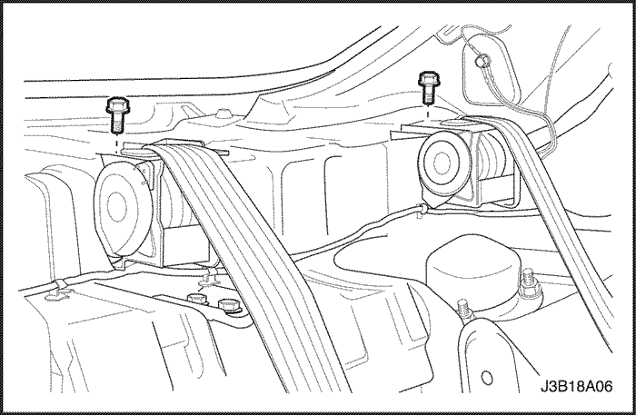
Cinturón de seguridad y hebilla del asiento trasero con tres puntos de anclaje (izq., centro, dch.) - Notchback
Procedimiento de desmontaje
- Desmonte el panel de la repisa trasera. Consulte la Sección 9G, Guarnecido interior.
- Quite los tornillos de fijación del retractor del cinturón de seguridad trasero (izq., central, dch.) del panel trasero.
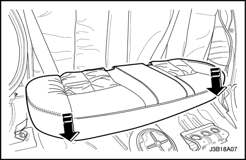
- Desmonte el cojín del asiento trasero. Consulte la sección 9H, ASIENTOS.
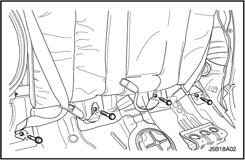
- Quite los tornillos de anclaje al piso del cinturón de seguridad.
- Desmonte el cinturón de seguridad.
procedimiento de montaje
Aviso: Metales distintos en contacto directo pueden corroerse rápidamente. Asegúrese de utilizar los elementos de sujeción correctos para evitar una corrosión prematura.
- Coloque los tornillos de anclaje al piso del cinturón de seguridad.
Apretar
Apriete el tornillo de anclaje del cinturón de seguridad hasta 38 N•m (28 lb-pie).
- Coloque los tornillos del retractor del cinturón de seguridad trasero (izq., central, dch.) en el panel trasero.
Apretar
Apriete los tornillos del retractor del cinturón de seguridad trasero hasta 38 N•m (28 lb-pie).
- Monte el cojín del asiento trasero. Consulte la sección 9H, ASIENTOS.
- Monte el panel de la repisa trasera. Consulte la Sección 9G, Guarnecido interior.
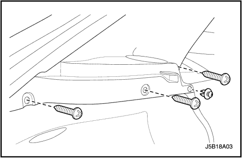
Cinturón de seguridad y hebilla del asiento trasero con tres puntos de anclaje (izq., centro, dch.) - Hatchback, Wagon
Procedimiento de desmontaje
- Desmonte el panel de la repisa trasera y el panel de guarnecido del montante C.
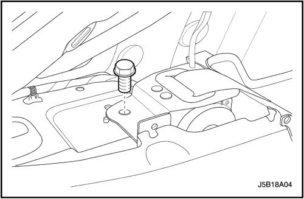
- Quite los tornillos de fijación del retractor del cinturón de seguridad trasero (izq., dch.).
- Desmonte el cojín del asiento trasero. Consulte la Sección 9H, Asientos.
- Quite los tornillos de anclaje al piso del cinturón de seguridad.
- Desmonte el cinturón de seguridad.
procedimiento de montaje
- Coloque los tornillos de anclaje al piso del cinturón de seguridad.
Apretar
Apriete los tornillos de anclaje al piso del cinturón de seguridad hasta 38 N•m (28 lb-pie).
- Coloque los tornillos de fijación del retractor del cinturón de seguridad trasero (izq., dch.).
Apretar
Apriete los tornillos de fijación del retractor del cinturón de seguridad trasero (izq., dch.) hasta 38 N•m (28 lb-pie).
- Monte el cojín del asiento trasero. Consulte la Sección 9H, Asientos.
- Monte el panel de la repisa trasera y el panel de guarnecido del montante C con 4 tornillos de fijación.
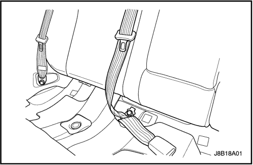
Cinturón de seguridad y hebilla del asiento trasero con tres puntos de anclaje - Sólo Hatchabck y Wagon
Procedimiento de desmontaje
- Desmonte el cojín del asiento trasero. Consulte la Sección
- Quite el tornillo de anclaje al piso del cinturón de seguridad y la hebilla.
- Desmonte el reposacabezas y el manguito guía del respaldo del asiento trasero. Consulte la Sección
- Desmonte el respaldo del asiento trasero del vehículo. Consulte la Sección
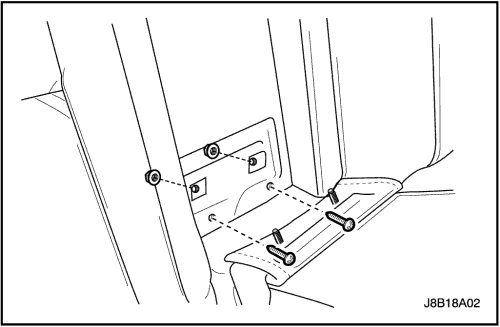
- Quite los tornillos y tuercas del reposabrazos del respaldo del asiento trasero para desmontarlo.
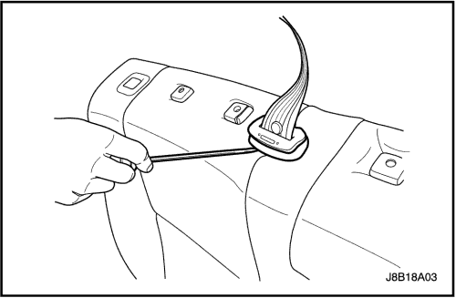
- Retire de la funda del asiento la funda del cinturón de seguridad central.
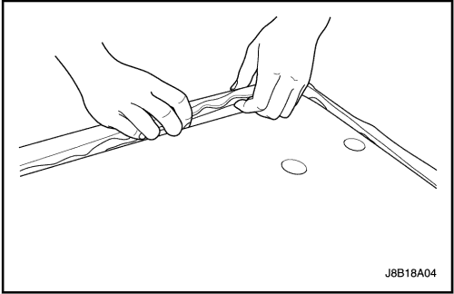
- Tire de la funda del respaldo del asiento para sacarla de la estructura.
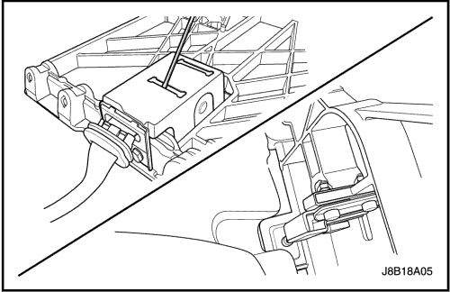
- Separe la espuma del asiento de la estructura desconectando previamente el botón de plegado del conjunto de la palanca de plegado, que se encuentra en la estructura del asiento.
- Retire la tapa del retractor del cinturón de seguridad central.
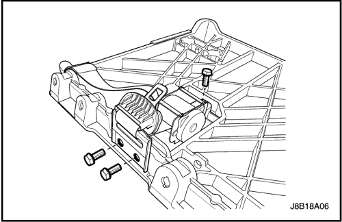
- Quite los tornillos y desmonte el retractor del cinturón de seguridad central.
procedimiento de montaje
- Monte el retractor del cinturón de seguridad central con sus tornillos.
Apretar
Apriete el tornillo del retractor del cinturón de seguridad central hasta 38 N•m (28 lb-pie).
- Coloque la tapa del retractor del cinturón de seguridad central.
- Coloque la espuma del asiento en su estructura y conecte el botón de plegado del asiento al conjunto de la palanca de plegado.
- Coloque la funda del asiento en la estructura del asiento.
- Coloque la funda del cinturón de seguridad central en la funda del asiento.
- Monte el reposabrazos en el respaldo del asiento con sus tornillos y tuercas.
Apretar
Apriete las tuercas del reposabrazos hasta 24 N•m (18 lb-pie).
- Monte el respaldo del asiento trasero en el vehículo. Consulte la Sección
- Monte el reposacabezas y el manguito guía en el respaldo del asiento trasero. Consulte la Sección
- Coloque el tornillo de anclaje al piso de la hebilla y el cinturón de seguridad.
Apretar
Apriete el tornillo de anclaje de la hebilla y el cinturón de seguridad hasta 38 N•m (28 lb-pie).
- Monte el cojín del asiento trasero. Consulte la Sección
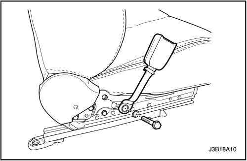
Hebilla del cinturón de seguridad delantero
Procedimiento de desmontaje
- Quite el tornillo y la arandela del cinturón de seguridad delantero.
- En caso de que se trate de la hebilla del cinturón de seguridad del conductor, retire el conector eléctrico.
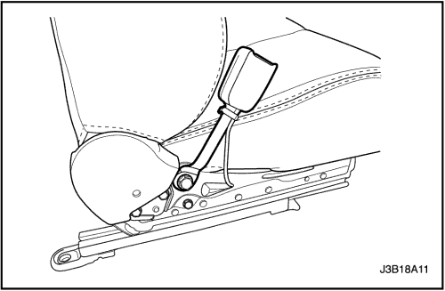
procedimiento de montaje
- Coloque el tornillo y la arandela del cinturón de seguridad delantero.
Apretar
Apriete el tornillo del cinturón de seguridad delantero hasta 42 N•m (31 lb-pie).
- En caso de que se trate de la hebilla del cinturón de seguridad del conductor, enchufe el conector eléctrico.
DESCRIPCIÓN GENERAL Y FUNCIONAMIENTO DEL SISTEMA
Aviso del cinturón de seguridad del conductor
El cinturón de seguridad del conductor incorpora una luz de aviso en el cuadro de instrumentos que, al girar la llave de contacto a la posición ON, recuerda al conductor que el cinturón no está abrochado.
Cinturón de seguridad delantero de tres puntos (ELR) con pretensores
El pretensor del cinturón de seguridad delantero con retractor de bloqueo de emergencia (ELR) y anclaje en tres puntos está siempre desbloqueado, lo que permite la libertad de movimiento del pasajero, excepto en caso de emergencia, como cuando se produce una desaceleración o aceleración rápida o maniobras para tomar curvas cerradas.
El pretensor del cinturón de seguridad delantero tiene una carga de encendido y un generador de gas para inflar el pretensor. El pretensor también incluye un conector y cableado. El conector del pretensor contiene una barra que pone en cortocircuito los circuitos de alta y baja tensión del pretensor cuando el conector está desenchufado. La barra de cortocircuito evita que pase corriente a través del pretensor mientras se realizan labores de reparación y mantenimiento. La barra de cortocircuito se desengancha cuando se enchufa el conector.
El pretensor es un retractor pirotécnico controlado electrónicamente que reduce la flojedad del cinturón de seguridad cuando éste se activa con los airbags.
El pretensor del cinturón de seguridad delantero debe cambiarse después de un accidente que lo haya activado.
Cinturón de seguridad trasero con tres puntos de anclaje CLR (ELR)
Las posiciones del asiento trasero utilizan cinturones de seguridad con retractor de bloqueo para niños (CLR) o retractor de bloqueo de emergencia (ELR). El cinturón de seguridad CLR (ELR) con tres puntos de anclaje siempre está desbloqueado, lo que permite la libertad de movimiento del pasajero, excepto en caso de emergencia, como cuando se produce una desaceleración o aceleración rápida o maniobras para tomar curvas cerradas.
Comprobaciones operaciones y funcionales
Precaución:
- Mantenga los objetos cortantes y potencialmente dañinos alejados de los cinturones de seguridad.
- Trate de no dañar o deformar la hebilla o la placa del cierre.
- No decolore o tiña la correa del cinturón de seguridad. Para lavar los cinturones, utilice, únicamente, agua y un jabón suave.
- Cuando se monten los tornillos del anclaje del cinturón de seguridad, comience apretando los tornillos con la mano para evitar que se pasen de rosca.
- No trate de efectuar ningún tipo de reparación en el mecanismo del retractor ni en las tapas. Sustituya cualquier conjunto defectuoso por otro nuevo.
- Sustituya cualquier cinturón de seguridad que esté cortado o haya sufrido cualquier tipo de daño.
- Compruebe todos los tornillos de anclaje de los cinturones de seguridad con el objeto de verificar que estén firmemente apretados.
- Compruebe la hebilla del cinturón de seguridad. Esta hebilla debe poder cerrarse y abrirse fácilmente.
- Después de introducir el cierre en la hebilla, tire bruscamente del cinturón. La hebilla debe permanecer cerrada.
- Extienda ampliamente la parte del hombro del cinturón de seguridad para asegurarse de que no haya torceduras ni roturas en el mismo.
- Deje que el cinturón se recoja completamente sobre el hombro. El cinturón debe retraerse con facilidad.